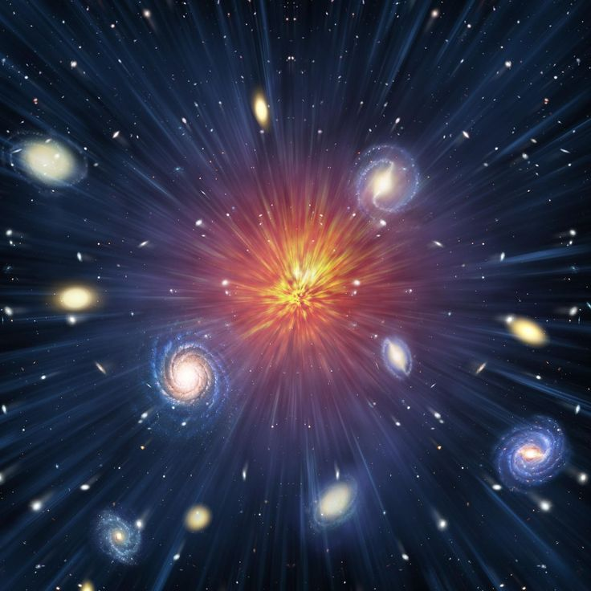

THE UNIVERSE:
Today, we embark on a celestial adventure, exploring the wonders of the universe that stretch far beyond the
limits of our imagination.
-
The Cosmic Tapestry: A Canvas of Endless Beauty
Picture the night sky as a canvas, painted with the radiant hues of distant stars and galaxies. The
universe, an infinite tapestry, captivates us with its mesmerizing beauty. From the ethereal glow of nebulae
to the silent dance of planets, each element contributes to a cosmic masterpiece that has been unfolding for
billions of years.
-
Birth of the Cosmos: The Big Bang Symphony
The universe had a humble beginning .a momentous event known as the Big Bang. Approximately 13.8 billion
years ago, the cosmos erupted into existence, giving birth to time, space, and matter. This cosmic
symphony
set the stage for the formation of galaxies, stars, and the celestial bodies that grace our night sky.

-
Galaxies: Islands of Stardust and Cosmic Mysteries
Galaxies, sprawling cities of stars, exist in various shapes and sizes, forming the backbone of the cosmic
order. From the spiral elegance of our Milky Way to the elliptical enigma of distant galaxies, these vast
structures harbor secrets that astronomers tirelessly work to unravel.
-
Stars: Celestial Alchemists of Light and Life
Stars, those luminous spheres of brilliance, are the celestial engines that drive the cosmic narrative. Born
from colossal clouds of gas and dust, stars illuminate the darkness and forge the elements that constitute
the building blocks of planets and life itself. Witnessing the birth and death of stars is akin to observing
the heartbeat of the universe.
-
Black Holes: Gravity's Grip on the Fabric of Spacetime
Black holes, mysterious and powerful, exert a gravitational pull so intense that nothing, not even light,
can escape. These cosmic behemoths result from the collapse of massive stars and continue to baffle
scientists with their unique properties and the role they play in shaping the cosmos.

THANKS FOR READING.